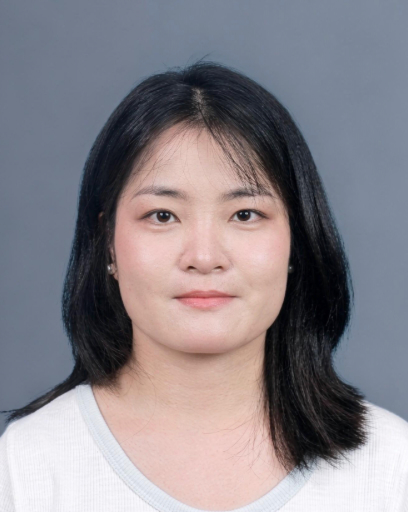

Exploring the formation and evolution of carbonaceous molecules in the interstellar medium through JWST observations, laboratory astrochemistry, theoretical calculations, and kinetic modeling.
I am a postdoctoral researcher in astrophysics at Xiangtan University. I received my Ph.D. in Astrophysics from the University of Science and Technology of China.
My research focuses on the physical and chemical evolution of large carbonaceous molecules in the interstellar medium, especially polycyclic aromatic hydrocarbons (PAHs), fullerenes, and related molecular clusters.
I combine JWST infrared observations, laboratory mass spectrometry, density functional theory calculations, and kinetic simulations to investigate processes such as fragmentation, ionization, hydrogenation, dehydrogenation, molecular growth, charge transfer, and chemical interactions between interstellar molecules and their environments.
I have published 17 peer-reviewed papers in journals including ApJS, A&A, ApJ, and MNRAS, including 7 JCR Q1 papers as first or corresponding author.
Postdoctoral Researcher
Xiangtan University
2025.07 – Present
Ph.D. in Astrophysics
University of Science and Technology of China
2020.09 – 2025.06
Visiting Ph.D. Student
Western University, Canada
2023.09 – 2023.12
Bachelor's Degree in Environmental Engineering
Wuhan University
2013.09 – 2017.06
Ph.D.: Prof. Junfeng Zhen
Postdoc: Prof. Junfeng Zhen & Prof. Xuejuan Yang
Visiting Ph.D.: Prof. Els Peeters & Prof. Jan Cami
Infrared imaging and spectroscopy of PAH emission using JWST NIRCam, MIRI, NIRSpec/IFU, and MIRI/MRS, with emphasis on star-forming regions and photodissociation regions.
Chemical evolution of PAHs, fullerenes, and molecular clusters, including hydrogenation, dehydrogenation, deuteration, nitridation, oxidation, sulfurization, clustering, and charge transfer.
Laboratory studies with quadrupole ion traps and reflectron time-of-flight mass spectrometry, combined with DFT calculations using Gaussian 16 and reaction-pathway analysis.
Physical and chemical evolution of Galactic and extragalactic star-forming regions and photodissociation regions, with particular interest in the interaction between radiation fields, molecules, and dust.
Affiliation: Xiangtan University
Email: zhangcongcong@xtu.edu.cn
GitHub: Congcong-Zhang
ORCID: 0009-0008-6754-8712